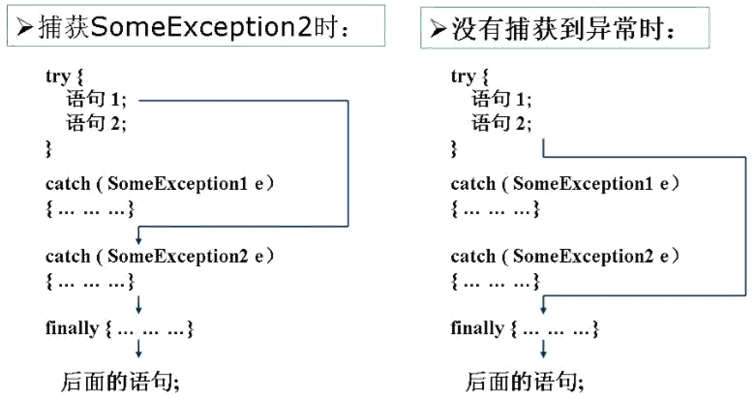
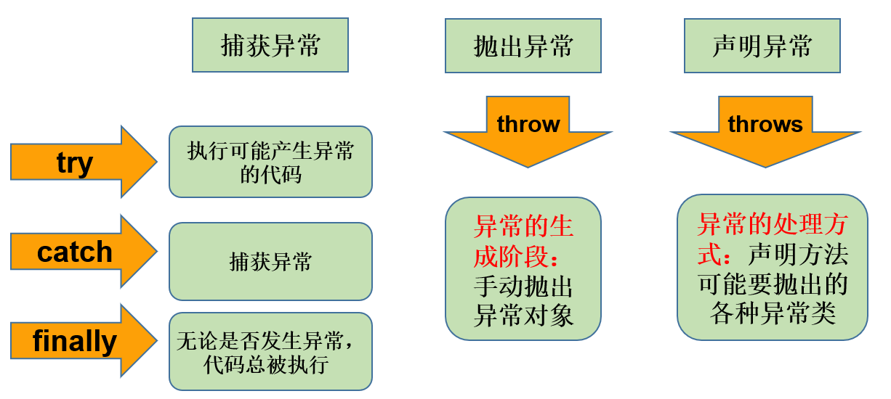

第09章_异常处理
本章专题与脉络

1. 异常概述
1.1 什么是生活的异常
男主角小明每天开车上班，正常车程1小时。但是，不出意外的话，可能会出现意外。
出现意外，即为异常情况。我们会做相应的处理。如果不处理，到不了公司。处理完了，就可以正常开车去公司。
1.2 什么是程序的异常
在使用计算机语言进行项目开发的过程中，即使程序员把代码写得尽善尽美，在系统的运行过程中仍然会遇到一些问题，因为很多问题不是靠代码能够避免的，比如：客户输入数据的格式问题，读取文件是否存在，网络是否始终保持通畅等等。
- 异常 ：指的是程序在执行过程中，出现的非正常情况，如果不处理最终会导致JVM的非正常停止。
异常指的并不是语法错误和逻辑错误。语法错了，编译不通过，不会产生字节码文件，根本不能运行。
代码逻辑错误，只是没有得到想要的结果，例如：求a与b的和，你写成了a-b
1.3 异常的抛出机制
Java中是如何表示不同的异常情况，又是如何让程序员得知，并处理异常的呢？
Java中把不同的异常用不同的类表示，一旦发生某种异常，就创建该异常类型的对象，并且抛出（throw）。然后程序员可以捕获(catch)到这个异常对象，并处理；如果没有捕获(catch)这个异常对象，那么这个异常对象将会导致程序终止。
举例：
运行下面的程序，程序会产生一个数组角标越界异常ArrayIndexOfBoundsException。我们通过图解来解析下异常产生和抛出的过程。
public class ArrayTools {
// 对给定的数组通过给定的角标获取元素。
public static int getElement(int[] arr, int index) {
int element = arr[index];
return element;
}
}测试类
public class ExceptionDemo {
public static void main(String[] args) {
int[] arr = { 34, 12, 67 };
intnum = ArrayTools.getElement(arr, 4)
System.out.println("num=" + num);
System.out.println("over");
}
}上述程序执行过程图解：

1.4 如何对待异常
对于程序出现的异常，一般有两种解决方法：一是遇到错误就终止程序的运行。另一种方法是程序员在编写程序时，就充分考虑到各种可能发生的异常和错误，极力预防和避免。实在无法避免的，要编写相应的代码进行异常的检测、以及异常的处理，保证代码的健壮性。
2. Java异常体系
2.1 Throwable
java.lang.Throwable 类是Java程序执行过程中发生的异常事件对应的类的根父类。
Throwable中的常用方法：
public void printStackTrace()：打印异常的详细信息。包含了异常的类型、异常的原因、异常出现的位置、在开发和调试阶段都得使用printStackTrace。
public String getMessage()：获取发生异常的原因。
2.2 Error 和 Exception
Throwable可分为两类：Error和Exception。分别对应着java.lang.Error与java.lang.Exception两个类。
Error：Java虚拟机无法解决的严重问题。如：JVM系统内部错误、资源耗尽等严重情况。一般不编写针对性的代码进行处理。
- 例如：StackOverflowError（栈内存溢出）和OutOfMemoryError（堆内存溢出，简称OOM）。
Exception: 其它因编程错误或偶然的外在因素导致的一般性问题，需要使用针对性的代码进行处理，使程序继续运行。否则一旦发生异常，程序也会挂掉。例如：
- 空指针访问
- 试图读取不存在的文件
- 网络连接中断
- 数组角标越界
说明：
- 无论是Error还是Exception，还有很多子类，异常的类型非常丰富。当代码运行出现异常时，特别是我们不熟悉的异常时，不要紧张，把异常的简单类名，拷贝到API中去查去认识它即可。
- 我们本章讲的异常处理，其实针对的就是Exception。
2.3 编译时异常和运行时异常
Java程序的执行分为编译时过程和运行时过程。有的错误只有在运行时才会发生。比如：除数为0，数组下标越界等。
因此，根据异常可能出现的阶段，可以将异常分为：
- 编译时期异常（即checked异常、受检异常）：在代码编译阶段，编译器就能明确
警示当前代码可能发生（不是一定发生）xx异常，并明确督促程序员提前编写处理它的代码。如果程序员没有编写对应的异常处理代码，则编译器就会直接判定编译失败，从而不能生成字节码文件。通常，这类异常的发生不是由程序员的代码引起的，或者不是靠加简单判断就可以避免的，例如：FileNotFoundException（文件找不到异常）。 - 运行时期异常（即runtime异常、unchecked异常、非受检异常）：在代码编译阶段，编译器完全不做任何检查，无论该异常是否会发生，编译器都不给出任何提示。只有等代码运行起来并确实发生了xx异常，它才能被发现。通常，这类异常是由程序员的代码编写不当引起的，只要稍加判断，或者细心检查就可以避免。
- java.lang.RuntimeException类及它的子类都是运行时异常。比如：ArrayIndexOutOfBoundsException数组下标越界异常，ClassCastException类型转换异常。

3. 常见的错误和异常
3.1 Error
最常见的就是VirtualMachineError，它有两个经典的子类：StackOverflowError、OutOfMemoryError。
package com.atguigu.exception;
import org.junit.Test;
public class TestStackOverflowError {
@Test
public void test01(){
//StackOverflowError
recursion();
}
public void recursion(){ //递归方法
recursion();
}
}
package com.atguigu.exception;
import org.junit.Test;
public class TestOutOfMemoryError {
@Test
public void test02(){
//OutOfMemoryError
//方式一：
int[] arr = new int[Integer.MAX_VALUE];
}
@Test
public void test03(){
//OutOfMemoryError
//方式二：
StringBuilder s = new StringBuilder();
while(true){
s.append("atguigu");
}
}
}
3.2 运行时异常
package com.atguigu.exception;
import org.junit.Test;
import java.util.Scanner;
public class TestRuntimeException {
@Test
public void test01(){
//NullPointerException
int[][] arr = new int[3][];
System.out.println(arr[0].length);
}
@Test
public void test02(){
//ClassCastException
Object obj = 15;
String str = (String) obj;
}
@Test
public void test03(){
//ArrayIndexOutOfBoundsException
int[] arr = new int[5];
for (int i = 1; i <= 5; i++) {
System.out.println(arr[i]);
}
}
@Test
public void test04(){
//InputMismatchException
Scanner input = new Scanner(System.in);
System.out.print("请输入一个整数：");//输入非整数
int num = input.nextInt();
input.close();
}
@Test
public void test05(){
int a = 1;
int b = 0;
//ArithmeticException
System.out.println(a/b);
}
}
3.3 编译时异常
package com.atguigu.exception;
import org.junit.Test;
import java.io.FileInputStream;
import java.io.FileNotFoundException;
import java.sql.Connection;
import java.sql.DriverManager;
import java.sql.SQLException;
public class TestCheckedException {
@Test
public void test06() {
Thread.sleep(1000);//休眠1秒 InterruptedException
}
@Test
public void test07(){
Class c = Class.forName("java.lang.String");//ClassNotFoundException
}
@Test
public void test08() {
Connection conn = DriverManager.getConnection("...."); //SQLException
}
@Test
public void test09() {
FileInputStream fis = new FileInputStream("尚硅谷Java秘籍.txt"); //FileNotFoundException
}
@Test
public void test10() {
File file = new File("尚硅谷Java秘籍.txt");
FileInputStream fis = new FileInputStream(file);//FileNotFoundException
int b = fis.read();//IOException
while(b != -1){
System.out.print((char)b);
b = fis.read();//IOException
}
fis.close();//IOException
}
}4. 异常的处理
4.1 异常处理概述
在编写程序时，经常要在可能出现错误的地方加上检测的代码，如进行x/y运算时，要检测分母为0，数据为空，输入的不是数据而是字符等。过多的if-else分支会导致程序的代码加长、臃肿，可读性差，程序员需要花很大的精力“堵漏洞”。因此采用异常处理机制。
Java异常处理
Java采用的异常处理机制，是将异常处理的程序代码集中在一起，与正常的程序代码分开，使得程序简洁、优雅，并易于维护。
Java异常处理的方式：
方式一：try-catch-finally
方式二：throws + 异常类型
4.2 方式1：捕获异常（try-catch-finally）
Java提供了异常处理的抓抛模型。
- 前面提到，Java程序的执行过程中如出现异常，会生成一个异常类对象，该异常对象将被提交给Java运行时系统，这个过程称为
抛出(throw)异常。 - 如果一个方法内抛出异常，该异常对象会被抛给调用者方法中处理。如果异常没有在调用者方法中处理，它继续被抛给这个调用方法的上层方法。这个过程将一直继续下去，直到异常被处理。这一过程称为
捕获(catch)异常。 - 如果一个异常回到main()方法，并且main()也不处理，则程序运行终止。
4.2.1 try-catch-finally基本格式
捕获异常语法如下：
try{
...... //可能产生异常的代码
}
catch( 异常类型1 e ){
...... //当产生异常类型1型异常时的处置措施
}
catch( 异常类型2 e ){
...... //当产生异常类型2型异常时的处置措施
}
finally{
...... //无论是否发生异常，都无条件执行的语句
}
1、整体执行过程：
当某段代码可能发生异常，不管这个异常是编译时异常（受检异常）还是运行时异常（非受检异常），我们都可以使用try块将它括起来，并在try块下面编写catch分支尝试捕获对应的异常对象。
- 如果在程序运行时，try块中的代码没有发生异常，那么catch所有的分支都不执行。
- 如果在程序运行时，try块中的代码发生了异常，根据异常对象的类型，将从上到下选择第一个匹配的catch分支执行。此时try中发生异常的语句下面的代码将不执行，而整个try…catch之后的代码可以继续运行。
- 如果在程序运行时，try块中的代码发生了异常，但是所有catch分支都无法匹配（捕获）这个异常，那么JVM将会终止当前方法的执行，并把异常对象“抛”给调用者。如果调用者不处理，程序就挂了。

2、try
- 捕获异常的第一步是用
try{…}语句块选定捕获异常的范围，将可能出现异常的业务逻辑代码放在try语句块中。
3、catch (Exceptiontype e)
catch分支，分为两个部分，catch()中编写异常类型和异常参数名，{}中编写如果发生了这个异常，要做什么处理的代码。
如果明确知道产生的是何种异常，可以用该异常类作为catch的参数；也可以用其父类作为catch的参数。
比如：可以用ArithmeticException类作为参数的地方，就可以用RuntimeException类作为参数，或者用所有异常的父类Exception类作为参数。但不能是与ArithmeticException类无关的异常，如NullPointerException（catch中的语句将不会执行）。
每个try语句块可以伴随一个或多个catch语句，用于处理可能产生的不同类型的异常对象。
如果有多个catch分支，并且多个异常类型有父子类关系，必须保证小的子异常类型在上，大的父异常类型在下。否则，报错。
catch中常用异常处理的方式
public String getMessage()：获取异常的描述信息，返回字符串public void printStackTrace()：打印异常的跟踪栈信息并输出到控制台。包含了异常的类型、异常的原因、还包括异常出现的位置，在开发和调试阶段，都得使用printStackTrace()。
4.2.2 使用举例
举例1：
public class IndexOutExp {
public static void main(String[] args) {
String friends[] = { "lisa", "bily", "kessy" };
try {
for (int i = 0; i < 5; i++) {
System.out.println(friends[i]);
}
} catch (ArrayIndexOutOfBoundsException e) {
System.out.println("index err");
}
System.out.println("\nthis is the end");
}
}
举例2：
public class DivideZero1 {
int x;
public static void main(String[] args) {
int y;
DivideZero1 c = new DivideZero1();
try {
y = 3 / c.x;
} catch (ArithmeticException e) {
System.out.println("divide by zero error!");
}
System.out.println("program ends ok!");
}
}
举例3：
@Test
public void test1(){
try{
String str1 = "atguigu.com";
str1 = null;
System.out.println(str1.charAt(0));
}catch(NullPointerException e){
//异常的处理方式1
System.out.println("不好意思，亲~出现了小问题，正在加紧解决...");
}catch(ClassCastException e){
//异常的处理方式2
System.out.println("出现了类型转换的异常");
}catch(RuntimeException e){
//异常的处理方式3
System.out.println("出现了运行时异常");
}
//此处的代码，在异常被处理了以后，是可以正常执行的
System.out.println("hello");
}举例4：
4.2.3 finally使用及举例
因为异常会引发程序跳转，从而会导致有些语句执行不到。而程序中有一些特定的代码无论异常是否发生，都
需要执行。例如，数据库连接、输入流输出流、Socket连接、Lock锁的关闭等，这样的代码通常就会放到finally块中。所以，我们通常将一定要被执行的代码声明在finally中。- 唯一的例外，使用 System.exit(0) 来终止当前正在运行的 Java 虚拟机。
不论在try代码块中是否发生了异常事件，catch语句是否执行，catch语句是否有异常，catch语句中是否有return，finally块中的语句都会被执行。
finally语句和catch语句是可选的，但finally不能单独使用。
try{ }finally{ }
举例1：确保资源关闭
package com.atguigu.keyword;
import java.util.InputMismatchException;
import java.util.Scanner;
public class TestFinally {
public static void main(String[] args) {
Scanner input = new Scanner(System.in);
try {
System.out.print("请输入第一个整数：");
int a = input.nextInt();
System.out.print("请输入第二个整数：");
int b = input.nextInt();
int result = a/b;
System.out.println(a + "/" + b +"=" + result);
} catch (InputMismatchException e) {
System.out.println("数字格式不正确，请输入两个整数");
}catch (ArithmeticException e){
System.out.println("第二个整数不能为0");
} finally {
System.out.println("程序结束，释放资源");
input.close();
}
}
@Test
public void test1(){
FileInputStream fis = null;
try{
File file = new File("hello1.txt");
fis = new FileInputStream(file);//FileNotFoundException
int b = fis.read();//IOException
while(b != -1){
System.out.print((char)b);
b = fis.read();//IOException
}
}catch(IOException e){
e.printStackTrace();
}finally{
try {
if(fis != null)
fis.close();//IOException
} catch (IOException e) {
e.printStackTrace();
}
}
}
}举例2：从try回来
public class FinallyTest1 {
public static void main(String[] args) {
int result = test("12");
System.out.println(result);
}
public static int test(String str){
try{
Integer.parseInt(str);
return 1;
}catch(NumberFormatException e){
return -1;
}finally{
System.out.println("test结束");
}
}
}举例3：从catch回来
public class FinallyTest2 {
public static void main(String[] args) {
int result = test("a");
System.out.println(result);
}
public static int test(String str) {
try {
Integer.parseInt(str);
return 1;
} catch (NumberFormatException e) {
return -1;
} finally {
System.out.println("test结束");
}
}
}举例4：从finally回来
public class FinallyTest3 {
public static void main(String[] args) {
int result = test("a");
System.out.println(result);
}
public static int test(String str) {
try {
Integer.parseInt(str);
return 1;
} catch (NumberFormatException e) {
return -1;
} finally {
System.out.println("test结束");
return 0;
}
}
}笔试题：
public class ExceptionTest {
public static void main(String[] args) {
int result = test();
System.out.println(result); //100
}
public static int test(){
int i = 100;
try {
return i;
} finally {
i++;
}
}
}笔试题：final、finally、finalize有什么区别？
4.2.4 练习
编写一个类ExceptionTest，在main方法中使用try、catch、finally，要求：
在try块中，编写被零除的代码。
在catch块中，捕获被零除所产生的异常，并且打印异常信息
在finally块中，打印一条语句。
4.2.5 异常处理的体会
前面使用的异常都是
RuntimeException类或是它的子类，这些类的异常的特点是：即使没有使用try和catch捕获，Java自己也能捕获，并且编译通过 ( 但运行时会发生异常使得程序运行终止 )。所以，对于这类异常，可以不作处理，因为这类异常很普遍，若全处理可能会对程序的可读性和运行效率产生影响。如果抛出的异常是IOException等类型的
非运行时异常，则必须捕获，否则编译错误。也就是说，我们必须处理编译时异常，将异常进行捕捉，转化为运行时异常。
4.3 方式2：声明抛出异常类型（throws）
如果在编写方法体的代码时，某句代码可能发生某个
编译时异常，不处理编译不通过，但是在当前方法体中可能不适合处理或无法给出合理的处理方式，则此方法应显示地声明抛出异常，表明该方法将不对这些异常进行处理，而由该方法的调用者负责处理。
具体方式：在方法声明中用
throws语句可以声明抛出异常的列表，throws后面的异常类型可以是方法中产生的异常类型，也可以是它的父类。
4.3.1 throws基本格式
声明异常格式：
修饰符 返回值类型 方法名(参数) throws 异常类名1,异常类名2…{ } 在throws后面可以写多个异常类型，用逗号隔开。
举例：
public void readFile(String file) throws FileNotFoundException,IOException {
...
// 读文件的操作可能产生FileNotFoundException或IOException类型的异常
FileInputStream fis = new FileInputStream(file);
//...
}
4.3.2 throws 使用举例
举例：针对于编译时异常
package com.atguigu.keyword;
public class TestThrowsCheckedException {
public static void main(String[] args) {
System.out.println("上课.....");
try {
afterClass();//换到这里处理异常
} catch (InterruptedException e) {
e.printStackTrace();
System.out.println("准备提前上课");
}
System.out.println("上课.....");
}
public static void afterClass() throws InterruptedException {
for(int i=10; i>=1; i--){
Thread.sleep(1000);//本来应该在这里处理异常
System.out.println("距离上课还有：" + i + "分钟");
}
}
}
举例：针对于运行时异常：
throws后面也可以写运行时异常类型，只是运行时异常类型，写或不写对于编译器和程序执行来说都没有任何区别。如果写了，唯一的区别就是调用者调用该方法后，使用try…catch结构时，IDEA可以获得更多的信息，需要添加哪种catch分支。
package com.atguigu.keyword;
import java.util.InputMismatchException;
import java.util.Scanner;
public class TestThrowsRuntimeException {
public static void main(String[] args) {
Scanner input = new Scanner(System.in);
try {
System.out.print("请输入第一个整数：");
int a = input.nextInt();
System.out.print("请输入第二个整数：");
int b = input.nextInt();
int result = divide(a,b);
System.out.println(a + "/" + b +"=" + result);
} catch (ArithmeticException | InputMismatchException e) {
e.printStackTrace();
} finally {
input.close();
}
}
public static int divide(int a, int b)throws ArithmeticException{
return a/b;
}
}
4.3.3 方法重写中throws的要求
方法重写时，对于方法签名是有严格要求的。复习：
（1）方法名必须相同
（2）形参列表必须相同
（3）返回值类型
- 基本数据类型和void：必须相同
- 引用数据类型：<=
（4）权限修饰符：>=，而且要求父类被重写方法在子类中是可见的
（5）不能是static，final修饰的方法此外，对于throws异常列表要求：
- 如果父类被重写方法的方法签名后面没有 “throws 编译时异常类型”，那么重写方法时，方法签名后面也不能出现“throws 编译时异常类型”。
- 如果父类被重写方法的方法签名后面有 “
throws 编译时异常类型”，那么重写方法时，throws的编译时异常类型必须 <= 被重写方法throws的编译时异常类型，或者不throws编译时异常。 - 方法重写，对于“
throws 运行时异常类型”没有要求。因为子类对象只会在运行时被调用，对编译是否报错没有影响。
package com.atguigu.keyword;
import java.io.IOException;
public class OverrideTest {
public static void main(String[] args) {
Father f = new Son();
try {
f.method1();
} catch (Exception e) { //编译时运行的是Father的方法，需要捕获Father的异常
e.printStackTrace();
}
}
}
class Father{
public void method()throws Exception{
System.out.println("Father.method");
}
}
class Son extends Father{
@Override
public void method() throws IOException,ClassCastException { //异常需为父对象异常的子类，否则运行时无法捕获
System.out.println("Son.method");
}
}4.4 两种异常处理方式的选择
前提：对于异常，使用相应的处理方式。此时的异常，主要指的是编译时异常。
- 如果程序代码中，涉及到资源的调用（流、数据库连接、网络连接等），则必须考虑使用try-catch-finally来处理，保证不出现内存泄漏。
- 如果父类被重写的方法没有throws异常类型，则子类重写的方法中如果出现异常，只能考虑使用try-catch-finally进行处理，不能throws。
- 开发中，方法a中依次调用了方法b,c,d等方法，方法b,c,d之间是递进关系。此时，如果方法b,c,d中有异常，我们通常选择使用throws，而方法a中通常选择使用try-catch-finally。
5. 手动抛出异常对象：throw
Java 中异常对象的生成有两种方式：
由虚拟机自动生成：程序运行过程中，虚拟机检测到程序发生了问题，那么针对当前代码，就会在后台自动创建一个对应异常类的实例对象并抛出。
由开发人员手动创建：
new 异常类型([实参列表]);，如果创建好的异常对象不抛出对程序没有任何影响，和创建一个普通对象一样，但是一旦throw抛出，就会对程序运行产生影响了。
5.1 使用格式
throw new 异常类名(参数);throw语句抛出的异常对象，和JVM自动创建和抛出的异常对象一样。
如果是编译时异常类型的对象，同样需要使用throws或者try…catch处理，否则编译不通过。
如果是运行时异常类型的对象，编译器不提示。
可以抛出的异常必须是Throwable或其子类的实例。下面的语句在编译时将会产生语法错误：
throw new String("want to throw");
5.2 使用注意点：
无论是编译时异常类型的对象，还是运行时异常类型的对象，如果没有被try..catch合理的处理，都会导致程序崩溃。
throw语句会导致程序执行流程被改变，throw语句是明确抛出一个异常对象，因此它下面的代码将不会执行。
如果当前方法没有try…catch处理这个异常对象，throw语句就会代替return语句提前终止当前方法的执行，并返回一个异常对象给调用者。
public class ThrowTest {
public static void main(String[] args) {
Student stu = new Student();
stu.regist(10);
stu.regist(-10);
System.out.println(stu);
}
}
class Student {
int id;
public void regist(int id) {
if (id > 0) {
this.id = id;
} else {
throw new RuntimeException("id有误");
}
}
@Override
public String toString() {
return "Student{" +
"id=" + id +
'}';
}
}package com.atguigu.keyword;
public class TestThrow {
public static void main(String[] args) {
try {
System.out.println(max(4,2,31,1));
} catch (Exception e) {
e.printStackTrace();
}
try {
System.out.println(max(4));
} catch (Exception e) {
e.printStackTrace();
}
try {
System.out.println(max());
} catch (Exception e) {
e.printStackTrace();
}
}
public static int max(int... nums){
if(nums == null || nums.length==0){
throw new IllegalArgumentException("没有传入任何整数，无法获取最大值");
}
int max = nums[0];
for (int i = 1; i < nums.length; i++) {
if(nums[i] > max){
max = nums[i];
}
}
return max;
}
}
6. 自定义异常
6.1 为什么需要自定义异常类
Java中不同的异常类，分别表示着某一种具体的异常情况。那么在开发中总是有些异常情况是核心类库中没有定义好的，此时我们需要根据自己业务的异常情况来定义异常类。例如年龄负数问题，考试成绩负数问题，某员工已在团队中等。
6.2 如何自定义异常类
（1）要继承一个异常类型
自定义一个编译时异常类型：自定义类继承java.lang.Exception。
自定义一个运行时异常类型：自定义类继承java.lang.RuntimeException。
（2）建议大家提供至少两个构造器，一个是无参构造，一个是(String message)构造器。
（3）自定义异常需要提供serialVersionUID
6.3 注意点
自定义的异常只能通过throw抛出。
自定义异常最重要的是异常类的名字和message属性。当异常出现时，可以根据名字判断异常类型。比如：
TeamException("成员已满，无法添加");、TeamException("该员工已是某团队成员");自定义异常对象只能手动抛出。抛出后由try..catch处理，也可以甩锅throws给调用者处理。
6.4 举例
举例1：
class MyException extends Exception {
static final long serialVersionUID = 23423423435L;
private int idnumber;
public MyException(String message, int id) {
super(message);
this.idnumber = id;
}
public int getId() {
return idnumber;
}
}
public class MyExpTest {
public void regist(int num) throws MyException {
if (num < 0)
throw new MyException("人数为负值，不合理", 3);
else
System.out.println("登记人数" + num);
}
public void manager() {
try {
regist(100);
} catch (MyException e) {
System.out.print("登记失败，出错种类" + e.getId());
}
System.out.print("本次登记操作结束");
}
public static void main(String args[]) {
MyExpTest t = new MyExpTest();
t.manager();
}
}
举例2：
package com.atguigu.define;
//自定义异常：
public class NotTriangleException extends Exception{
static final long serialVersionUID = 13465653435L;
public NotTriangleException() {
}
public NotTriangleException(String message) {
super(message);
}
}
package com.atguigu.define;
public class Triangle {
private double a;
private double b;
private double c;
public Triangle(double a, double b, double c) throws NotTriangleException {
if(a<=0 || b<=0 || c<=0){
throw new NotTriangleException("三角形的边长必须是正数");
}
if(a+b<=c || b+c<=a || a+c<=b){
throw new NotTriangleException(a+"," + b +"," + c +"不能构造三角形，三角形任意两边之后必须大于第三边");
}
this.a = a;
this.b = b;
this.c = c;
}
public double getA() {
return a;
}
public void setA(double a) throws NotTriangleException{
if(a<=0){
throw new NotTriangleException("三角形的边长必须是正数");
}
if(a+b<=c || b+c<=a || a+c<=b){
throw new NotTriangleException(a+"," + b +"," + c +"不能构造三角形，三角形任意两边之后必须大于第三边");
}
this.a = a;
}
public double getB() {
return b;
}
public void setB(double b) throws NotTriangleException {
if(b<=0){
throw new NotTriangleException("三角形的边长必须是正数");
}
if(a+b<=c || b+c<=a || a+c<=b){
throw new NotTriangleException(a+"," + b +"," + c +"不能构造三角形，三角形任意两边之后必须大于第三边");
}
this.b = b;
}
public double getC() {
return c;
}
public void setC(double c) throws NotTriangleException {
if(c<=0){
throw new NotTriangleException("三角形的边长必须是正数");
}
if(a+b<=c || b+c<=a || a+c<=b){
throw new NotTriangleException(a+"," + b +"," + c +"不能构造三角形，三角形任意两边之后必须大于第三边");
}
this.c = c;
}
@Override
public String toString() {
return "Triangle{" +
"a=" + a +
", b=" + b +
", c=" + c +
'}';
}
}package com.atguigu.define;
public class TestTriangle {
public static void main(String[] args) {
Triangle t = null;
try {
t = new Triangle(2,2,3);
System.out.println("三角形创建成功：");
System.out.println(t);
} catch (NotTriangleException e) {
System.err.println("三角形创建失败");
e.printStackTrace();
}
try {
if(t != null) {
t.setA(1);
}
System.out.println("三角形边长修改成功");
} catch (NotTriangleException e) {
System.out.println("三角形边长修改失败");
e.printStackTrace();
}
}
}7. 练习
练习1：
public class ReturnExceptionDemo {
static void methodA() {
try {
System.out.println("进入方法A");
throw new RuntimeException("制造异常");
}finally {
System.out.println("用A方法的finally");
}
}
static void methodB() {
try {
System.out.println("进入方法B");
return;
} finally {
System.out.println("调用B方法的finally");
}
}
public static void main(String[] args) {
try {
methodA();
} catch (Exception e) {
System.out.println(e.getMessage());
}
methodB();
}
}
练习2：
从键盘接收学生成绩，成绩必须在0~100之间。
自定义成绩无效异常。
编写方法接收成绩并返回该成绩，如果输入无效，则抛出自定义异常。
练习3：
编写应用程序EcmDef.java，接收命令行的两个参数，要求不能输入负数，计算两数相除。
对数据类型不一致(NumberFormatException)、缺少命令行参数(ArrayIndexOutOfBoundsException、
除0(ArithmeticException)及输入负数(EcDef 自定义的异常)进行异常处理。
提示：
(1)在主类(EcmDef)中定义异常方法(ecm)完成两数相除功能。
(2)在main()方法中使用异常处理语句进行异常处理。
(3)在程序中，自定义对应输入负数的异常类(EcDef)。
(4)运行时接受参数 java EcmDef 20 10 //args[0]=“20” args[1]=“10”
(5)Interger类的static方法parseInt(String s)将s转换成对应的int值。
如：int a=Interger.parseInt(“314”); //a=314;
8. 小结与小悟
8.1 小结：异常处理5个关键字
类比：上游排污，下游治污
8.2 感悟
小哲理：
世界上最遥远的距离，是我在if里你在else里，似乎一直相伴又永远分离；
世界上最痴心的等待，是我当case你是switch，或许永远都选不上自己；
世界上最真情的相依，是你在try我在catch。无论你发神马脾气，我都默默承受，静静处理。到那时，再来期待我们的finally。
歌词：